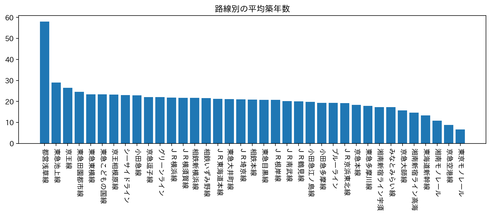
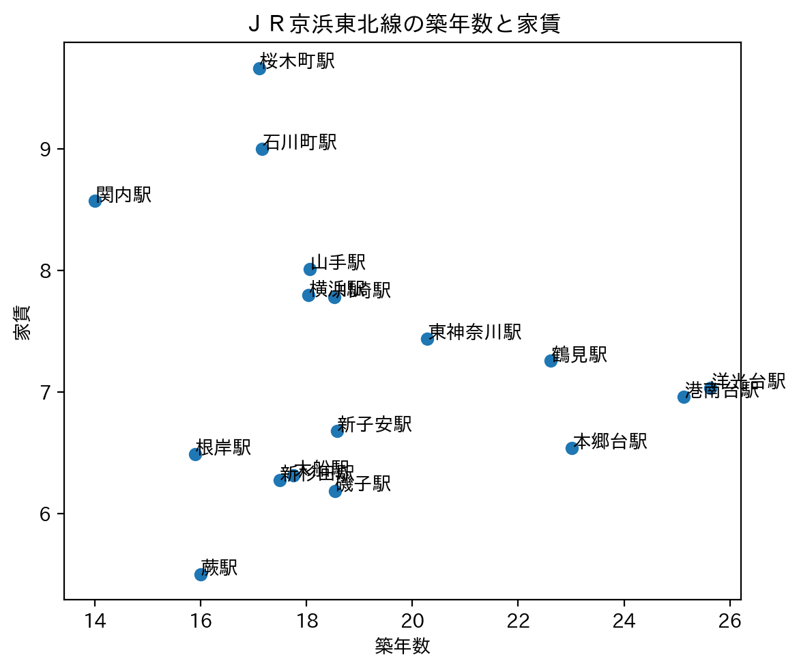
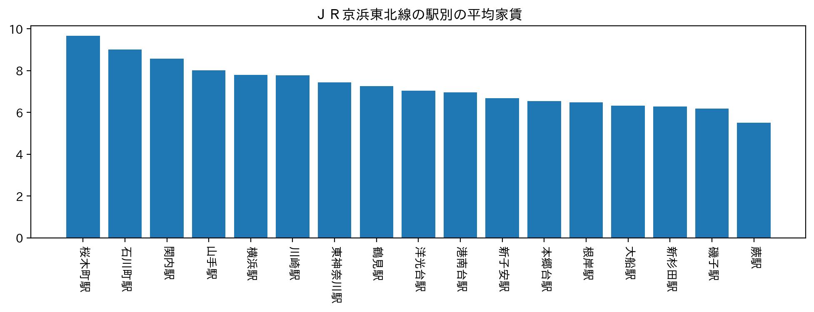
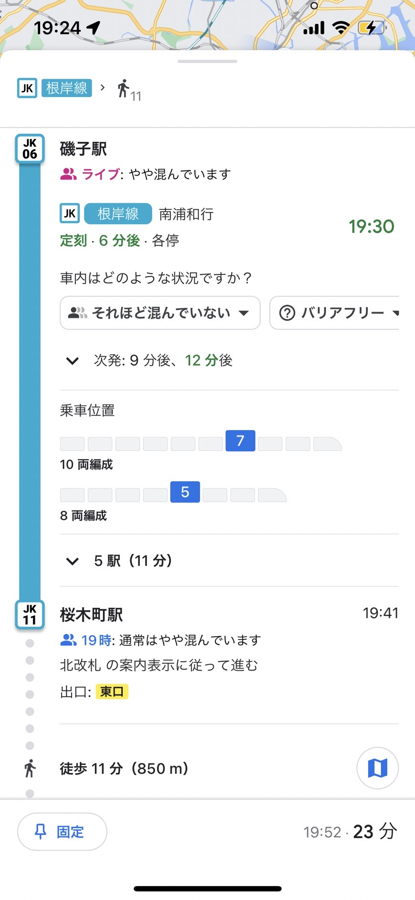
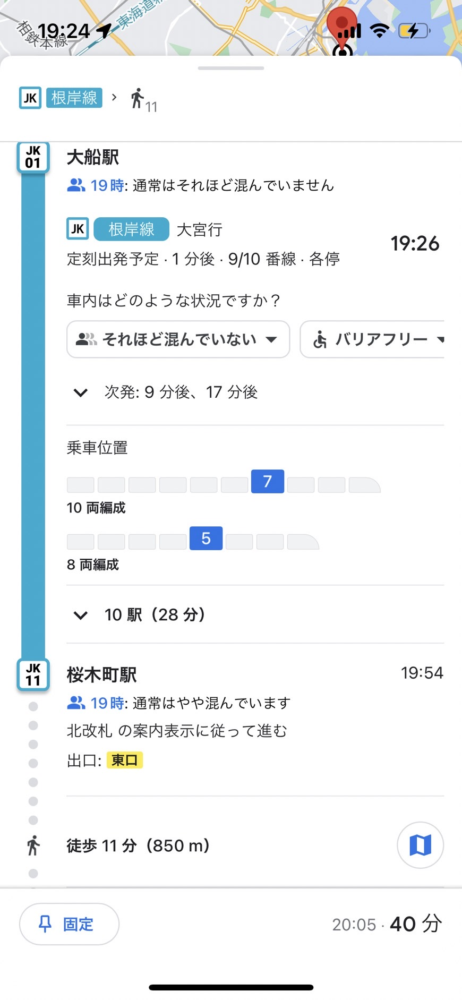
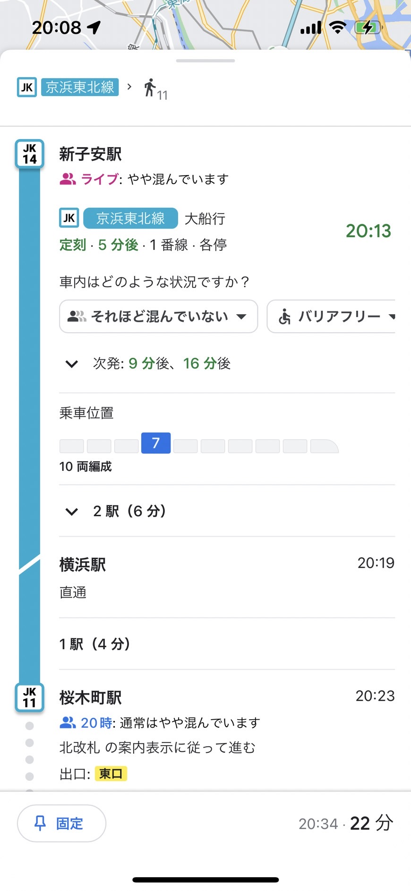
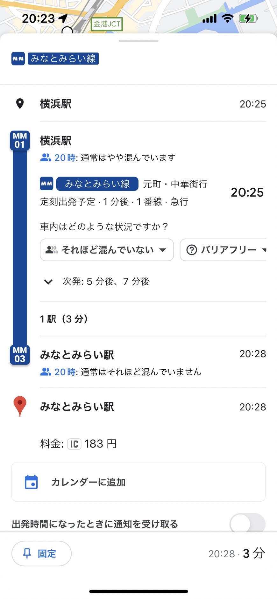
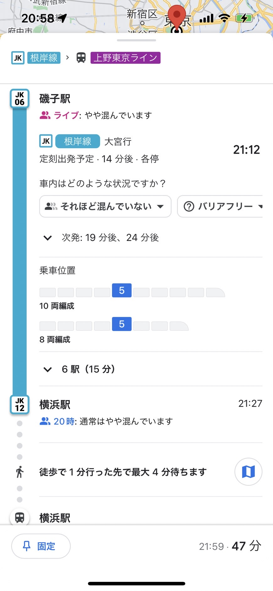
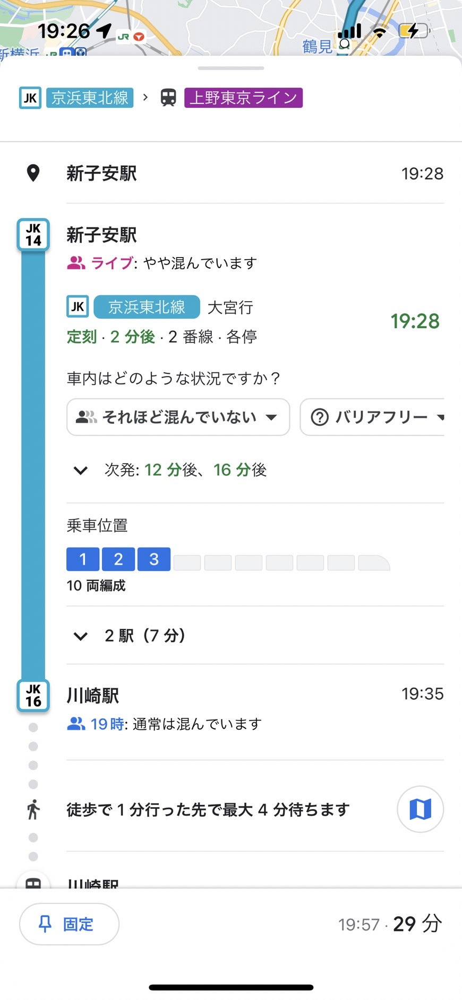
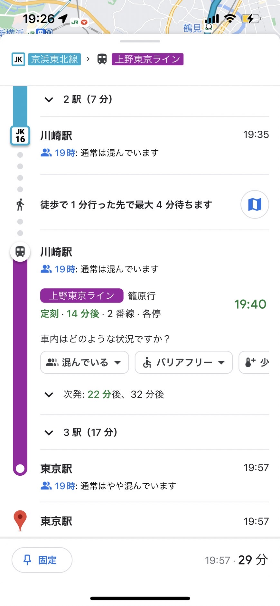

選択基準は、以下のブラフである。

このグラフをもとに比較的物件数も多く、普段利用しているＪＲ京浜東北線について分析を行うことにした。
また、次のグラフも良い判断材料になった。

平均築年数が低い部類なため、新しい物件も多いだろう。 分析を行う路線が定まったのでさらにＪＲ京浜東北線の中で条件を絞っていく。

ここから絞っていく作業に入る。

ピックアップ候補として磯子駅、大船駅、新子安駅を比較した。
  
桜木町駅からの徒歩を想定した。
みなとみらい駅まで電車なら電車時間に－４分に加えて次の時間を加える。

この比較で磯子駅か新子安駅に絞った、磯子の方が若干安い。
最後に交通で比較を行った。
路線が多い横浜と東京の時間を調べた。


 
この比較からＪＲ京浜東北線で物件探しをするなら新子安が私のおすすめの場所で新子安駅付近から物件探しするのが良いという結論に至った。